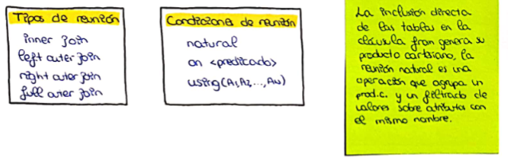

BASES DE DATOS · curso 2
6. Structured Query Languaje (SQL) Consultas · BASES DE DATOS
Escrito por Adrián Quiroga Linares.
6.1 Estructura Básica de una Consulta en SQL
Las consultas SQL tienen una estructura básica que consiste en tres cláusulas principales:
select atrib1,..., atribN
from tabla
where predicado
6.2 Select operación de proyección
Por defecto, SQL permite que se repitan valores en los resultados. Si varios profesores pertenecen al mismo departamento, podríamos obtener el nombre del departamento repetido. Si deseamos evitar estos duplicados, utilizamos la palabra clave DISTINCT:
SELECT DISTINCT nombre_dept
FROM profesor;
SQL permite incluir operaciones matemáticas en las consultas. Por ejemplo, si queremos aumentar un 10% el sueldo de todos los profesores:
SELECT ID, nombre, nombre_dept, sueldo * 1.1
FROM profesor;
También podemos renombrar tanto atributos como relaciones. Utilizamos la cláusula AS para renombrar columnas y tablas en las consultas SQL.
Cuando ejecutamos una consulta SQL, los resultados incluyen columnas cuyos nombres provienen de las tablas de la cláusula FROM. Sin embargo, si hay columnas con el mismo nombre en diferentes tablas, el resultado tendrá nombres duplicados. Además, cuando se utilizan expresiones en la cláusula SELECT, estas no tendrán un nombre explícito.
Si queremos que el atributo nombre aparezca como nombre_profesor, podemos modificar la consulta:
SELECT nombre AS nombre_profesor, asignatura_id
FROM profesor, enseña
WHERE profesor.ID = enseña.ID;
También podemos renombrar tablas utilizando la cláusula AS. Esto es especialmente útil cuando queremos hacer referencias a la misma tabla varias veces. Por ejemplo, si queremos comparar los sueldos de los profesores en un departamento específico:
SELECT DISTINCT T.nombre
FROM profesor AS T, profesor AS S
WHERE T.sueldo > S.sueldo AND S.nombre_dept = 'Biología';
Aquí, T y S son alias para la misma tabla profesor, permitiendo que la consulta sea más legible y que podamos diferenciar entre las dos instancias de la misma tabla.
6.3 Where operación de selección
Podemos usar la cláusula WHERE para aplicar condiciones. Por ejemplo, si queremos encontrar solo a los profesores del departamento de Informática cuyo sueldo sea mayor a 70,000 €:
SELECT nombre
FROM profesor
WHERE nombre_dept = 'Informática' AND sueldo > 70000;
Ejemplo de Uso de BETWEEN:
SELECT nombre
FROM profesor
WHERE sueldo BETWEEN 90000 AND 100000;
Ejemplo de Uso de IN:
SELECT nombre
FROM profesor
WHERE sueldo IN (900 ,1000);
Si queremos filtrar por un nulo
where profesor IS NULL
where profesor IS NOT NULL
6.4 Operaciones con Cadenas de Caracteres
SQL permite varias funciones que operan sobre cadenas de caracteres con upper(s) para convertir a mayúsculas y lower(s) para convertir a minúsculas, o trim(s) para eliminar espacios al final de las cadenas.
El operador LIKE se utiliza para buscar patrones en cadenas. Los caracteres especiales son % (cualquier subcadena) y _ (cualquier carácter).
Ejemplo de Búsqueda de Patrones:
SELECT nombre_dept
FROM departamento
--Esto busca todos los departamentos cuyo nombre de edificio contenga "Watson"--
WHERE edificio LIKE '%Watson%';
--Esto busca todos los departamentos cuyo nombre de edificio termine por "Watson"--
WHERE edificio LIKE '%Watson';
Nota
También se pueden hacer casts en SQL:
cast(entero as numeric(8,1))
6.5 Orden en la Presentación de las Tuplas
SQL permite controlar el orden de las filas devueltas con la cláusula ORDER BY. Por defecto, el orden es ascendente.
Ejemplo de Ordenación Ascendente:
SELECT nombre
FROM profesor
WHERE nombre_dept = 'Física'
ORDER BY nombre;
Orden Descendente y Múltiples Atributos:
SELECT *
FROM profesor
ORDER BY sueldo DESC, nombre ASC;
Esto ordena los resultados por sueldo de manera descendente y, en caso de empate, por nombre de manera ascendente.
6.6 Operaciones sobre Conjuntos
6.6.1 Unión (UNION)
Combina los resultados de dos consultas, eliminando duplicados por defecto. Si necesitas conservar los duplicados, usa UNION ALL.
SELECT columna FROM tabla1
UNION
SELECT columna FROM tabla2;
6.6.2 Intersección (INTERSECT)
Devuelve únicamente las filas comunes entre dos consultas, eliminando duplicados automáticamente.
SELECT columna FROM tabla1
INTERSECT
SELECT columna FROM tabla2;
6.6.3 Excepto (EXCEPT)
Devuelve las filas que están en la primera consulta pero no en la segunda. Para conservar duplicados, usa EXCEPT ALL.
SELECT columna FROM tabla1
EXCEPT
SELECT columna FROM tabla2;
Resumen
- UNION: Combina resultados y elimina duplicados.
- INTERSECT: Devuelve los elementos comunes.
- EXCEPT: Devuelve las filas exclusivas de la primera consulta.
6.7 Valor NULL
Los valores nulos en SQL son un concepto importante que implica ciertas peculiaridades en las operaciones aritméticas, de comparación y de conjunto. Aquí te explico en detalle cómo funcionan y cómo afectan las consultas:
SELECT r.A + 5 FROM tabla r;
Si r.A es nulo para alguna de las tuplas, el resultado de r.A + 5 también será nulo para esa tupla. Esto se debe a que no se puede determinar un resultado numérico válido si uno de los operandos es nulo.
Las comparaciones que involucran valores nulos son problemáticas. Por ejemplo, consideremos la comparación:
1 < NULL
No se puede afirmar que esta comparación sea verdadera o falsa porque no se conoce el valor que representa NULL. Por lo tanto, SQL considera el resultado de cualquier comparación que involucre un valor nulo como unknown (desconocido). Esto crea un tercer estado lógico además de true (verdadero) y false (falso).
Debido a la introducción de unknown, las operaciones booleanas deben extenderse para incluir este estado adicional. Aquí están las reglas:
-
AND
true AND unknown→unknownfalse AND unknown→falseunknown AND unknown→unknown
-
OR
true OR unknown→truefalse OR unknown→unknownunknown OR unknown→unknown
-
NOT
NOT unknown→unknown
6.8 Funciones de agregación
Las funciones de agregación toman un conjunto de valores y devuelven un único valor. SQL incluye las siguientes funciones de agregación incorporadas:
- Media (
avg): Calcula la media aritmética de un conjunto de valores. - Mínimo (
min): Devuelve el valor mínimo de un conjunto. - Máximo (
max): Devuelve el valor máximo de un conjunto. - Total (
sum): Calcula la suma total de un conjunto de valores. - Recuento (
count): Devuelve el número de elementos en un conjunto.
SELECT AVG(sueldo) FROM profesor WHERE nombre_dept = 'Informática';
Cuando se trata de valores nulos, las funciones de agregación se comportan de la siguiente manera:
SUMeAVGignoran los valores nulos. Por ejemplo:
SELECT SUM(sueldo) FROM profesor;
Si algunas tuplas tienen NULL en sueldo, estas se ignoran en el cálculo.
COUNT(*)cuenta todas las tuplas, incluso si contienen valores nulos. Sin embargo,COUNT(columna)ignora los nulos en esa columna.
6.9 Agrupar Resultados
La cláusula GROUP BY unida a un SELECTpermite agrupar filas según las columnas que de indiquen como parámetros. Se suele usar para obtener datos resumidos y agrupados por las columnas que se necesiten.
SELECT EMployeeID, COUNT(*) AS TotaPedidos, COUNT(ShipRegion) AS FilasNoNulas,
MIN(ShippedDate) AS FechaMin, MAX(ShippedDate) AS FechaMAX,
SUM(Freight) PesoTotal, AVG(Freight) AS PesoPromedio
FROM Orders
GROUP BY EmployeeID
Importante
Es muy importante tener en cuenta que cuando utilizamos la cláusula GROUP BY, los únicos campos que podemos incluir en el SELECT sin que estén dentro de una función de agregación, son los que vayan especificados en el GROUP BY.
La cláusula HAVING se utiliza para filtrar grupos después de aplicar funciones de agregación. Es como usar un WHERE pero en vez de afectar a las filas de la tabla, afecta a los grupos obtenidos.
SELECT nombre_dept, AVG(sueldo) AS med_sueldo
FROM profesor
GROUP BY nombre_dept
HAVING AVG(sueldo) > 42000;
En este caso, HAVING aplica el filtro después de calcular la media para cada grupo.
6.10 Subconsultas anidadas
Las consultas válidas en SQL siempre generan una tabla que puede ser usada dentro de otra consulta SQL, fundamentalmente en las cláusulas from y where para comparaciones y comprobaciones entre otras tareas.
Esta posibilidad de anidar varios niveles de consultas permite la estructura de consultas muy sofisticadas y complejas en SQL, es la parte más rica del lenguaje pero también la que más práctica necesita para llegar a ser dominada.
6.10.1 Pertenencia a conjuntos
La conectiva IN permite comprobar si un valor pertenece a un conjunto devuelto por una subconsulta. Esto es útil para consultas en las que queremos verificar si una tupla cumple ciertas condiciones basadas en otro conjunto de resultados.
SELECT DISTINCT asignatura_id
FROM sección
WHERE semestre = 'Otoño' AND año = 2009
AND asignatura_id IN (
SELECT asignatura_id
FROM sección
WHERE semestre = 'Primavera' AND año = 2010
);
Para encontrar todas las asignaturas que se enseñaron en otoño de 2009, pero no en primavera de 2010, podemos usar NOT IN:
SELECT DISTINCT asignatura_id
FROM sección
WHERE semestre = 'Otoño' AND año = 2009
AND asignatura_id NOT IN (
SELECT asignatura_id
FROM sección
WHERE semestre = 'Primavera' AND año = 2010
);
Podemos usar IN con valores específicos, por ejemplo, para encontrar a los profesores que no son ni "Mozart" ni "Einstein":
SELECT DISTINCT nombre
FROM profesor
WHERE nombre NOT IN ('Mozart', 'Einstein');
6.10.2 Comparación de conjuntos
SQL permite comparar un valor con los elementos de un conjunto devuelto por una subconsulta. Para esto se usan operadores como > SOME y > ALL.
SELECT nombre
FROM profesor
WHERE sueldo > SOME (
SELECT sueldo
FROM profesor
WHERE nombre_dept = 'Biología'
);
Aquí, la subconsulta devuelve los sueldos de los profesores del departamento de Biología. La condición > SOME se cumple si el sueldo del profesor es mayor que al menos uno de esos sueldos.
Si quisiéramos encontrar los profesores cuyo sueldo es mayor que el de todos los profesores de Biología, usaríamos > ALL:
SELECT nombre
FROM profesor
WHERE sueldo > ALL (
SELECT sueldo
FROM profesor
WHERE nombre_dept = 'Biología'
);
El operador EXISTS permite comprobar si una subconsulta devuelve alguna tupla. Esto es útil para verificar si un conjunto no está vacío.
SELECT asignatura_id
FROM sección AS S
WHERE semestre = 'Otoño' AND año = 2009
AND EXISTS (
SELECT *
FROM sección AS T
WHERE semestre = 'Primavera' AND año = 2010
AND S.asignatura_id = T.asignatura_id
);
El constructor UNIQUE permite verificar que una subconsulta no contenga tuplas duplicadas.
SELECT T.asignatura_id
FROM asignatura AS T
WHERE UNIQUE (
SELECT R.asignatura_id
FROM sección AS R
WHERE T.asignatura_id = R.asignatura_id
AND R.año = 2009
);
Aquí, UNIQUE garantiza que no haya duplicados en las asignaturas ofrecidas en 2009.
6.11 Expresiones de reunión en SQL
6.11.1 Condiciones de reunión
La operación de unión natural opera con dos relaciones y genera como resultado una relación con los pares de tuplas que tienen los mismos valores en los atributos que aparecen en los esquemas de ambas relaciones. Se utiliza la cláusula NATURAL JOIN.
select atrib1,...,atribN
from tabla1 natural join tabla2
where condición;
La cláusula JOIN ... USING permite indicar el nombre de los atributos a comparar:
SELECT atrib1,...,atribN
FROM (r1 natural join r2) join relación using (atrib)
La condición ON permite la reunión de un predicado general sobre relaciones. A diferencia de natural join el resultado contiene los atributos comparados dos veces en la reunión (una por cada tabla).
select *
from r1 join r2 on r1.an=r2.an*
6.11.2 Reunión externa
La operación de reunión externa funciona de forma similar a la operación de reunión, creando tuplas en el resultado con valores nulos en los atributos de la relación que sólo aparecen en el esquema de una de las relaciones.
-
Reunión externa izquierda (left outer join): Conserva todas las filas de la tabla a la izquierda de la operación, incluso si no tienen coincidencias en la tabla de la derecha. Los valores de las columnas de la tabla de la derecha se rellenan con
nullen estas filas.select * from estudiante left outer join matricula on estudiante.ID = matricula.ID; -
Reunión externa derecha (right outer join): Es similar a la reunión externa izquierda, pero conserva todas las filas de la tabla a la derecha de la operación.
select * from matricula right outer join estudiante on estudiante.ID = matricula.ID; -
Reunión externa completa (full outer join): Combina los resultados de la reunión externa izquierda y derecha, conservando todas las filas de ambas tablas. Las filas que no tienen coincidencias en la otra tabla tendrán valores
nullen las columnas correspondientes.select * from estudiante full outer join matricula on estudiante.ID = matricula.ID;
El tipo de reunion por defecto en la reunión interna.
